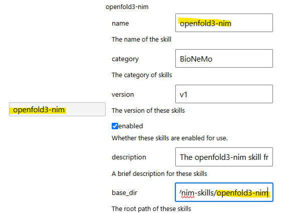
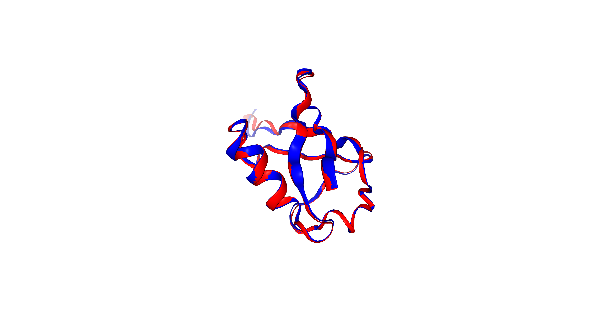

OpenFold3 Skill Demonstration
In this section, we will demonstrate how to utilize the OpenFold3 skill provided by the bionemo-agent-toolkit package. This skill enables high-accuracy biomolecular structure prediction, supporting proteins, DNA, RNA, small-molecule ligands, and complex multi-entity assemblies. For more comprehensive details, please refer to the detailed documentation.
Before getting started, we need configure the OpenFold3 skill for JupyDeep. Please consult the “How-to Skill” guide for general setup instructions, and ensure you have an active Conda environment alongside a valid NVIDIA NGC_API_KEY. Below is our configuration for the OpenFold3 skill. Make sure the skill name and the base_dir suffix are identical.

Subsequently, we prepared the below prompt and integrated it into the JupyterLab-JupyDeep context, with a primary focus on optimizing data processing and visualization.
Generate a Jupyter Notebook script that implements a complete protein structural alignment and visualization pipeline. All required dependencies (
biopython,nglview,mdanalysis) are pre-installed in the environment. Pipeline Steps
Structure Prediction: Call the OpenFold3 model via the NVIDIA API (using env
NGC_API_KEY) to predict the 3D structure of human ubiquitin using the following target sequence. Save the predicted structure asubiquitin_openfold3.pdb.MQIFVKTLTGKTITLEVEPSDTIENVKAKIQDKEGIPPDQQRLIFAGKQLEDGRTLSDYNIQKESTLHLVLRLRGGReference Fetching: Download the experimental ubiquitin structure from the RCSB PDB database (PDB ID:
1UBQ) to serve as the ground-truth reference, and save it asubiquitin_reference.pdb.Rigid Structural Alignment: Perform a rigid body alignment of the predicted OpenFold3 structure onto the reference structure (
1UBQ) based on common C-alpha (\(C_\alpha\)) residues usingMDAnalysis.analysis.align. Print out the final calculated RMSD value.Interactive Visualization: Render the aligned structures using
nglviewin a cartoon representation. Ensure that the coordinates are properly translated/centered for optimal viewing. Color the OpenFold3 predicted structure red and the 1UBQ reference structure blue to highlight structural discrepancies.
Paste the prompt above into the chat input box. The content below demonstrates the subsequent output generated by JupyDeep via OpenAI GPT-5.2 and the OpenFold3 skill (with slight adjustments made for visual clarity). For the complete example, please refer to this case in the JupyDeep gallery.
Ubiquitin structure prediction, alignment, and visualization
This notebook implements an end-to-end pipeline:
Predict human ubiquitin structure with OpenFold3 via the NVIDIA API (auth via
NGC_API_KEY).Download the experimental reference structure (PDB: 1UBQ).
Perform rigid-body alignment using MDAnalysis on common \(C_\alpha\) atoms and report RMSD.
Visualize aligned structures interactively with nglview.
Outputs:
ubiquitin_openfold3.pdb(predicted)
ubiquitin_reference.pdb(reference)
ubiquitin_openfold3_aligned.pdb(predicted after alignment into reference frame)
[1]:
# Core imports
import os
import json
import textwrap
from pathlib import Path
import numpy as np
import requests
import MDAnalysis as mda
from MDAnalysis.analysis import align
import nglview as nv
# Constants / file paths
UBIQUITIN_SEQ = (
"MQIFVKTLTGKTITLEVEPSDTIENVKAKIQDKEGIPPDQQRLIFAGKQLEDGRTLSDYNIQKESTLHLVLRLRGG"
)
PRED_PDB = Path("ubiquitin_openfold3.pdb")
REF_PDB = Path("ubiquitin_reference.pdb")
ALIGNED_PDB = Path("ubiquitin_openfold3_aligned.pdb")
print("Sequence length:", len(UBIQUITIN_SEQ))
print("Working directory:", Path.cwd())
print("Will write:", PRED_PDB, REF_PDB, ALIGNED_PDB)
/home/yezhe/.local/lib/python3.12/site-packages/Bio/Application/__init__.py:39: BiopythonDeprecationWarning: The Bio.Application modules and modules relying on it have been deprecated.
Due to the on going maintenance burden of keeping command line application
wrappers up to date, we have decided to deprecate and eventually remove these
modules.
We instead now recommend building your command line and invoking it directly
with the subprocess module.
warnings.warn(
Sequence length: 76
Working directory: /home/yezhe/Developer/jupyterdev/github/jupydeep_docs/source/notebooks/biology
Will write: ubiquitin_openfold3.pdb ubiquitin_reference.pdb ubiquitin_openfold3_aligned.pdb
1) Predict ubiquitin structure with OpenFold3 (NVIDIA hosted API)
This cell calls the hosted OpenFold3 endpoint:
URL:
https://health.api.nvidia.com/v1/biology/openfold/openfold3/predictAuth:
Authorization: Bearer $NGC_API_KEY
It writes the first returned structure sample to ubiquitin_openfold3.pdb.
If you do not have an API key, set it in the environment before running:
export NGC_API_KEY='...'
[2]:
def predict_ubiquitin_openfold3(sequence: str, out_pdb: Path, diffusion_samples: int = 1) -> dict:
"""Call hosted OpenFold3 and save the first returned structure as PDB.
Returns the full JSON response (parsed).
"""
# Validate API key presence (do not print its value)
if "NGC_API_KEY" not in os.environ or not os.environ["NGC_API_KEY"].strip():
raise EnvironmentError(
"NGC_API_KEY is not set. Please export NGC_API_KEY in your environment to call the hosted API."
)
url = "https://health.api.nvidia.com/v1/biology/openfold/openfold3/predict"
headers = {
"Content-Type": "application/json",
"Authorization": f"Bearer {os.environ['NGC_API_KEY']}",
}
# Minimal payload with an explicit single-sequence A3M MSA (works as a smoke-test MSA)
payload = {
"inputs": [
{
"input_id": "ubiquitin",
"output_format": "pdb",
"molecules": [
{
"type": "protein",
"id": "A",
"sequence": sequence,
"diffusion_samples": int(diffusion_samples),
"msa": {
"main": {
"a3m": {
"alignment": f">query\n{sequence}",
"format": "a3m",
}
}
},
}
],
}
]
}
resp = requests.post(url, headers=headers, json=payload, timeout=300)
# Provide more helpful error info if available
if not resp.ok:
try:
err = resp.json()
except Exception:
err = resp.text
raise RuntimeError(f"OpenFold3 request failed: HTTP {resp.status_code}\n{err}")
result = resp.json()
# Extract the first sample structure
outputs = result.get("outputs", [])
if not outputs:
raise ValueError(f"No outputs in response keys={list(result.keys())}")
structures = outputs[0].get("structures_with_scores", [])
if not structures:
raise ValueError("No structures_with_scores returned by OpenFold3")
sample0 = structures[0]
fmt = sample0.get("format", "pdb")
structure_txt = sample0.get("structure", "")
if not structure_txt.strip():
raise ValueError("Returned structure is empty")
if fmt.lower() != "pdb":
raise ValueError(f"Expected PDB output but got format={fmt}")
out_pdb.write_text(structure_txt, encoding="utf-8")
# Print a compact confidence summary (not required, but helpful)
print("Saved:", out_pdb)
print(
"Scores:",
{k: sample0.get(k) for k in ["confidence_score", "complex_plddt_score", "ptm_score", "iptm_score", "complex_pde_score"]},
)
return result
# Run prediction only if the output file is missing (idempotent)
if not PRED_PDB.exists():
_openfold3_response = predict_ubiquitin_openfold3(UBIQUITIN_SEQ, PRED_PDB, diffusion_samples=1)
else:
print(f"{PRED_PDB} already exists; skipping OpenFold3 call.")
_openfold3_response = None
# Quick sanity check: first few lines
print("\n".join(PRED_PDB.read_text(encoding="utf-8").splitlines()[:5]))
ubiquitin_openfold3.pdb already exists; skipping OpenFold3 call.
ATOM 1 N MET A 1 3.415 -5.733 10.696 1.00 81.24 N
ATOM 2 CA MET A 1 2.864 -6.843 9.883 1.00 81.19 C
ATOM 3 C MET A 1 3.346 -6.692 8.454 1.00 82.07 C
ATOM 4 O MET A 1 3.697 -5.585 8.060 1.00 79.09 O
ATOM 5 CB MET A 1 1.329 -6.896 9.962 1.00 78.16 C
2) Fetch experimental reference structure (RCSB PDB: 1UBQ)
We download PDB ID 1UBQ from RCSB and save it to ubiquitin_reference.pdb.
[3]:
# Download 1UBQ from RCSB
pdb_id = "1UBQ"
url = f"https://files.rcsb.org/download/{pdb_id}.pdb"
if not REF_PDB.exists():
r = requests.get(url, timeout=60)
r.raise_for_status()
REF_PDB.write_text(r.text, encoding="utf-8")
print("Saved:", REF_PDB)
else:
print(f"{REF_PDB} already exists; skipping download.")
# Quick sanity check
print("\n".join(REF_PDB.read_text(encoding="utf-8", errors="ignore").splitlines()[:5]))
ubiquitin_reference.pdb already exists; skipping download.
HEADER CHROMOSOMAL PROTEIN 02-JAN-87 1UBQ
TITLE STRUCTURE OF UBIQUITIN REFINED AT 1.8 ANGSTROMS RESOLUTION
COMPND MOL_ID: 1;
COMPND 2 MOLECULE: UBIQUITIN;
COMPND 3 CHAIN: A;
3) Rigid-body structural alignment (MDAnalysis)
We align the predicted OpenFold3 structure onto the 1UBQ reference using the intersection of \(C_\alpha\) atoms.
Mobile:
ubiquitin_openfold3.pdbReference:
ubiquitin_reference.pdb
We also write an aligned PDB (ubiquitin_openfold3_aligned.pdb) so it can be visualized directly.
[4]:
from MDAnalysis.analysis import rms
# Load structures
u_ref = mda.Universe(str(REF_PDB))
u_mob = mda.Universe(str(PRED_PDB))
# Select common C-alpha atoms
sel = "protein and name CA"
ref_ca = u_ref.select_atoms(sel)
mob_ca = u_mob.select_atoms(sel)
print("Reference CA atoms:", len(ref_ca))
print("Mobile CA atoms:", len(mob_ca))
if len(ref_ca) == 0 or len(mob_ca) == 0:
raise ValueError("C-alpha selection returned 0 atoms; check input PDBs.")
n = min(len(ref_ca), len(mob_ca))
if len(ref_ca) != len(mob_ca):
print(f"Warning: CA atom counts differ; aligning first {n} atoms.")
# AlignTraj modifies the mobile coordinates in memory.
# We set in_memory=True to avoid writing a trajectory.
aligner = align.AlignTraj(
u_mob,
u_ref,
select=sel,
in_memory=True,
)
# Run alignment; results.rmsd is an array (frames x 1) for trajectories.
aligner.run()
# Compute RMSD after alignment (single frame) using the matched CA sets
rmsd_after = rms.rmsd(mob_ca.positions[:n], ref_ca.positions[:n], center=False, superposition=False)
print(f"Final RMSD (CA, Å): {rmsd_after:.3f}")
# Save aligned mobile structure (now in reference frame)
u_mob.atoms.write(str(ALIGNED_PDB))
print("Saved aligned PDB:", ALIGNED_PDB)
Reference CA atoms: 76
Mobile CA atoms: 76
Final RMSD (CA, Å): 0.604
Saved aligned PDB: ubiquitin_openfold3_aligned.pdb
/home/yezhe/.conda/envs/bionemo2/lib/python3.12/site-packages/MDAnalysis/core/universe.py:939: UserWarning: Reader has no dt information, set to 1.0 ps
dt=self.trajectory.ts.dt * step,
/home/yezhe/.conda/envs/bionemo2/lib/python3.12/site-packages/MDAnalysis/coordinates/PDB.py:885: UserWarning: Unit cell dimensions not found. CRYST1 record set to unitary values.
warnings.warn(
4) Interactive visualization (nglview)
We visualize:
Reference (1UBQ) in blue
OpenFold3 (aligned) in red
To ensure good viewing, we explicitly center() and zoom() the view.
[5]:
# Use the aligned predicted structure for visualization
u_ref_vis = mda.Universe(str(REF_PDB))
u_pred_vis = mda.Universe(str(ALIGNED_PDB))
# Create an NGLView widget with the reference as the base
view = nv.show_mdanalysis(u_ref_vis)
# Add the aligned prediction as a second component
view.add_component(nv.MDAnalysisTrajectory(u_pred_vis))
# Clean default representations (if any) and add cartoons with colors
view.clear_representations(component=0)
view.clear_representations(component=1)
# Component indices: 0 -> reference, 1 -> aligned prediction
view.add_cartoon(selection="protein", color="blue", component=0)
view.add_cartoon(selection="protein", color="red", component=1)
# Center/zoom for optimal viewing
view.center()
# Different nglview versions expose different helpers; fall back to NGL's autoView.
if hasattr(view, "zoom_to"):
view.zoom_to()
elif hasattr(view, "zoom"):
view.zoom(1.5)
elif hasattr(view, "_remote_call"):
view._remote_call("autoView")
/home/yezhe/.conda/envs/bionemo2/lib/python3.12/site-packages/MDAnalysis/coordinates/PDB.py:479: UserWarning: 1 A^3 CRYST1 record, this is usually a placeholder. Unit cell dimensions will be set to None.
warnings.warn(
/home/yezhe/.conda/envs/bionemo2/lib/python3.12/site-packages/MDAnalysis/coordinates/PDB.py:479: UserWarning: 1 A^3 CRYST1 record, this is usually a placeholder. Unit cell dimensions will be set to None.
warnings.warn(
[6]:
view.layout.width = '100%'
view.layout.height = '500px'
view
[7]:
import base64
import time
from IPython.display import display, Image
view.render_image(factor=4)
time.sleep(1.5)
if view._image_data:
if isinstance(view._image_data, str):
img_bytes = base64.b64decode(view._image_data)
else:
img_bytes = view._image_data
display(Image(data=img_bytes, format="png", width="100%"))
else:
print("Error: Image data not populated. Please re-run this cell.")

[ ]: